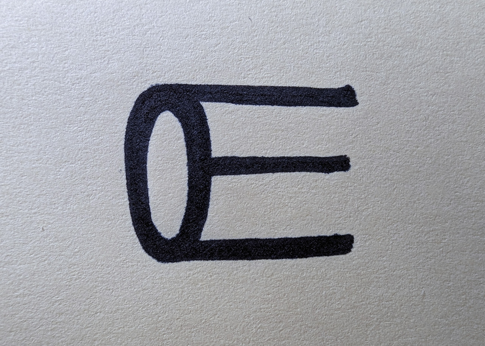

Logo: OLVE
Logodesign
2019
En god logo er
- Gjenkjennbar
- Enkel og tidløs
- Relevant
- Fleksibel
- Unik
Nedenfor argumenterer jeg hvorfor jeg synes logoen min tikker av disse kvalifikasjonene. Så får du
se om du er enig.

1. Gjenkjennbar:
Jeg hørte engang en klok designer definere gjennkjennbarhet:
"Om du kan skisse en logo på en serviett, kun ved hjelp av hukommelsen din,
da er den både enkel og karakteristisk nok."
2. Enkel og tidløs:
O + E = OLVE er et såre enkelt logokonsept i både form og fortelling som ikke kommer til å gå av moten
med det første. Med mindre jeg velger å bytte navn da.

3. Relevant:
Som designer gjør man særdeles mye forskjellig. Logoen kan gi assosiasjoner til mye forskjellig også.
Det første jeg tenkte på var bakenden på en blyant. Hva ser du?
Dessuten er den minimalistisk, med lite hokus pokus, noe som reflekterer med som designer.
Dette gjør den relevant i form av at den representerer meg på en beskrivende måte.
4. Fleksibel:
Den funker både stor, liten, tykk og smal, og i alle tenkelige farger.
5. Unik:
I min jakt på kule O-logoidéer fant jeg mange smarte, trendy og kule logoer, men ingen kombinerer O og E på denne måten.
Har du sett noe lignende?
Logoen er i stor grad basert på en font som jeg lagde i Adobe Illustrator.
E og Æ tar igjen karaktertrekket fra logoen.
"Letsegoo!"